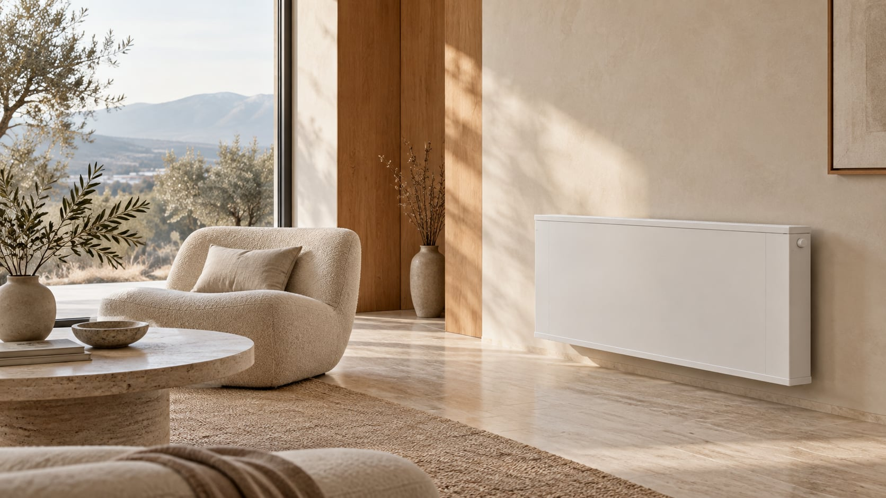

Línea 01 — Baja temperatura
Radiadores de baja temperatura.
Seis familias para trabajar a 35–45 °C, de diseño limpio y alta eficiencia: T30, Decor, Toalleros, Canales, Fancoils y Accesorios.
La gama, modelo a modelo.
02 — Modelos



Línea 01 — Baja temperatura
Seis familias para trabajar a 35–45 °C, de diseño limpio y alta eficiencia: T30, Decor, Toalleros, Canales, Fancoils y Accesorios.
02 — Modelos